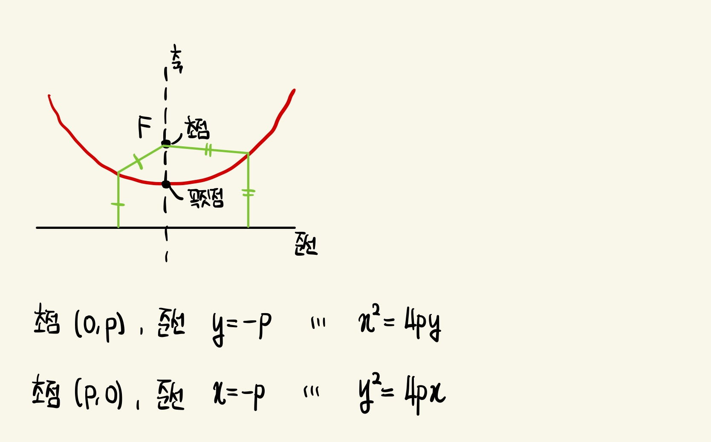
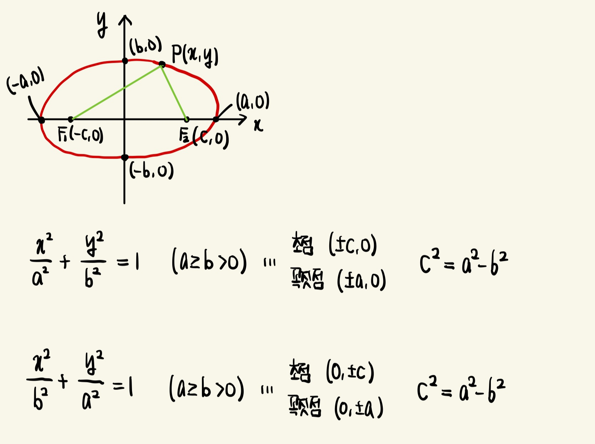
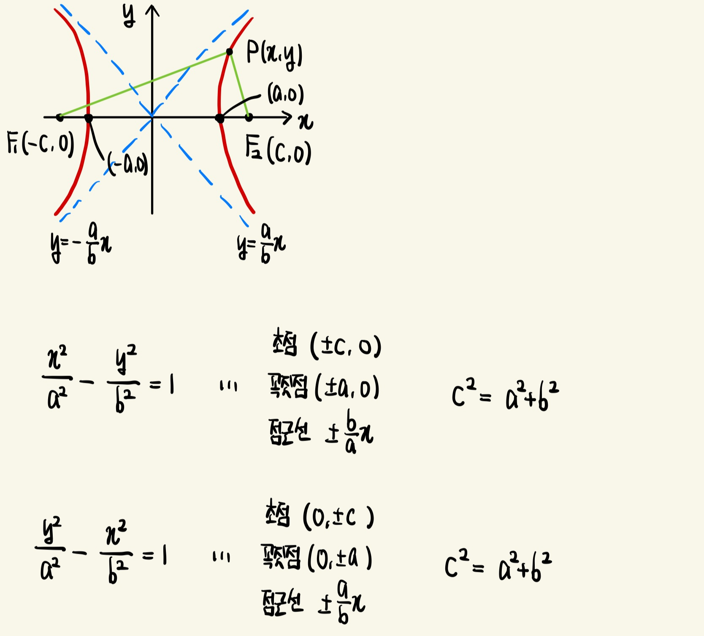

포물선 (Parabola)
평면에서 한 정점 F(초점)와 한 정직선(준선)으로부터 같은 거리에 있는 점들의 집합
- 꼭짓점 : 초점과 준선 사이의 중간점
- 축 : 초점을 지나고 준선에 수직인 선

타원 (Ellipse)
평면에서 두 정점 F1과 F2로부터 거리의 합이 상수인 점들의 집합
- 초점 : 두 정점
- 꼭짓점 : 점 (a,0)과 (-a,0)
- 장축 : 두 꼭짓점을 잇는 선분
- 단축 : 점 (0,b)와 (0,-b)를 잇는 선분
x 대신 -x 또는 y 대신 -y를 대입하여도 불변 => 타원은 두 축에 대하여 대칭
두 초점이 일치하면 c=0이고, a=b가 되어 타원은 반지름이 r=a=b인 원이 됨

쌍곡선 (Hyperbola)
평면에서 두 정점 F1과 F2(초점)로부터 거리의 차이가 일정한 점들의 집합
- 꼭짓점 : 점 (a,0)과 (-a,0)
